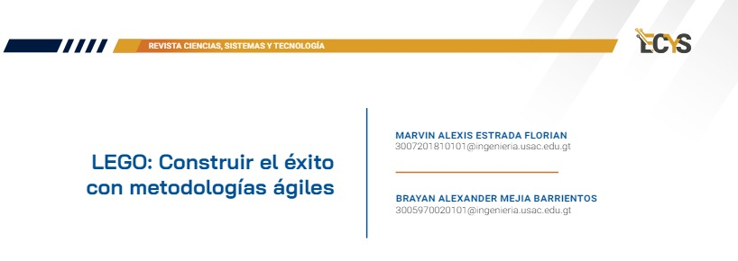

8 LEGO: Construir el éxito con metodologías ágiles {#2.3 }

PALABRAS CLAVE: Metodologías ágiles, eficiencia, scrum, mejora continua, resultados
8.1 Introducción
En la situación de un mercado competitivo de las empresas internacionales, se busca que los equipos que las conforman sean eficientes en el desarrollo de sus productos. Esta búsqueda puede llegar a ser complicada al tratar de manejar a tantas personas y que todas estas se apoyen en vez de perjudicarse entre sí. Para esta situación surgen las metodologías ágiles, que si bien no hay una fórmula para el éxito, en este artículo se detalla cómo una empresa grande como lo es LEGO, pudo cambiar su situación desde cómo maneja a sus equipos de desarrollo, hasta la satisfacción del cliente con los extraordinarios productos que nos proporcionan alegría y aprendizaje.
8.2 Artículo
Uno de los principales objetivos del mundo corporativo es la eficiencia, donde todos los procesos sean óptimos y realizados con el menor gasto de recursos posible; ante esta compleja tarea surge la solución de las metodologías ágiles, las cuales se enfocan en la implementación rápida de un equipo eficiente y altamente flexible para realizar una planeación del flujo de trabajo a realizar para un producto determinado.
Debido a esto, LEGO System A/S, empresa danesa de producción de juguetes donde su producto más famoso son los bloques de construcción, también cuenta con sets de construcción propios, juguetes de robótica, entre otros; se dieron cuenta de que el proceso tradicional de producción de productos era demasiado lento y no era óptimo, por lo que buscaban una transformación ágil como su principal paso a la eficiencia.
Ante la necesidad de adaptarse ante un mercado cambiante y exigente, las organizaciones buscan una metodología que se pueda adaptar a sus necesidades, pero no existe una solución perfecta al seleccionar una metodología en una empresa, existen muchas cosas que podrían salir mal durante el desarrollo del producto, como solucionar que los distintos equipos aporten al resultado final y no se perjudiquen entre sí, tener expectativas y objetivos realistas, priorización de tareas y satisfacer al cliente.
Figura 8.1: LEGO Campus
En empresas tan grandes como LEGO es muy complejo implementar una solución de manera general, por lo que el primer paso fue adaptar principios y marcos de trabajo ágiles en áreas pequeñas de la empresa para que fuera más manejable el desarrollo de productos. En base a esto, en una rama de este imperio se tiene a Lego Digital Solutions formado por varios equipos, los cuales decidieron implementar Scaled Agile Framework (SAFe). Esto transformó la organización en un equipo de equipos, donde introdujeron una cadencia de sprint compartida, sincronización descentralizada y planificación cada ocho semanas.
Esto cambió la cultura de trabajo a un ecosistema colaborativo, por la adopción de varios principios ágiles como lo son: el cuatro, que valora a los individuos y sus interacciones sobre los procesos; el cinco, que enfatiza la colaboración con el cliente más que la negociación; el seis, que aboga por la respuesta al cambio sobre el seguimiento de un plan rígido; el ocho, que promueve la entrega continua de software que funcione; el once, favorece la motivación mediante un entorno de trabajo adecuado; y el doce, que defiende la autoorganización de los equipos y la confianza en ellos para alcanzar los objetivos establecidos.
Figura 8.2: Involucramiento de equipos con SAFe en LEGO
Como se visualizó en la figura 2, la implementación ágil desde un grupo pequeño a una empresa global puede llegar a ser un proceso lento y estratégico, mostrando que hay algunos departamentos que lo adoptan rápidamente y otros demoran en la implementación del mismo. De los 40 departamentos que fueron encuestados, 26 lograron implementar de manera total o parcial las prácticas ágiles. En este proceso, los miembros mencionaron que es menos confuso y hay menos desperdicio de tiempo y trabajo.
Por lo que basados en la importancia de hacer cambios en áreas pequeñas de la empresa, posteriormente se dieron a la tarea de la implementación de Scrum para agilizar la manera en la que desarrollan sus productos; como ya es de conocimiento común, muchas empresas ahora se quieren centrar en ofrecer valor al cliente, por lo que este marco de trabajo nuevo para LEGO se alineaba de buena manera con su misión.
Para este nuevo proceso, el enfoque centrado en el cliente fue fundamental, por lo que tuvieron muy en cuenta lo que los clientes internos y externos les decían sobre sus productos, anotando la retroalimentación que les proporcionaban en sesiones periódicas para asegurarse que los productos resultantes cumplieran e incluso superaran los estándares y necesidades de los clientes, lo cual fue un cambio total en cómo trabajaban hasta ese momento.
Esto implicaba una gran responsabilidad y colaboración con el cliente, lo que necesitaba una transparencia bastante alta, por lo que LEGO decidió adoptar estos principios para que formaran parte de la identidad corporativa. Con solo estos principios se dio paso al uso de Scrum, lo que mejoró la alineación de toda la organización, la manera en la que se toman las decisiones y también el trabajo en equipo de manera muy notable.
Poco a poco el proceso de desarrollo de productos fue cambiando y esto dio pie a la inevitable mejora continua al tener ese contacto tan cercano con el cliente, como también entre los mismos desarrolladores de productos, ya que con Scrum al tener reuniones de planificación, retrospectivas y revisión, los equipos reflexionaban lo que les había funcionado, los errores que cometieron e incluso lo que podían mejorar; surgió un bucle de retroalimentación que les permitió pulir sus productos, como también sus procesos de desarrollo cada vez más.
Significativamente se produjeron resultados tangibles en la transformación de LEGO en el uso de metodologías ágiles, donde reportaron que sus productos llegaron al mercado más rápidamente, también redujeron el desperdicio a lo largo del proceso de desarrollo; lograron un notable aumento en la satisfacción al cliente, como en la calidad del producto, sin hablar de todas las mejoras internas que adoptaron en sus equipos en la implementación de SAFe y Scrum, demostrando que aún las empresas grandes y consolidadas pueden realizar cambios no solo en sus procedimientos, sino también en sus valores y principios.
8.3 Conclusiones
En cualquier cambio, siempre se van a encontrar obstáculos, ya que hay muchas formas de realizar un proceso, pero muy pocas son las correctas. LEGO demostró que para llegar al éxito se debe de trabajar primero en las partes que conforman la empresa, como lo son los equipos de trabajo, para cambiar por completo la dirección del futuro, interviniendo no solo en los empleados, sino también en sus valores, responsabilidades y principios; esto termina afectando en la entrega de un producto o servicio que supera las expectativas. Con la implementación de las metodologías ágiles SAFe y Scrum, LEGO tuvo muchas mejoras que no solo les proporcionaron un incremento económico sino que se acoplaron a los objetivos y visión de la empresa, por lo que impulsar cambios profundos y coordinados, es esencial para alcanzar el éxito y mantenerse a la vanguardia en un entorno empresarial dinámico.
8.4 Referencias
[1] Igbinoba, Bosa. “Agile Success Story: LEGO and their Agile Transformation.” Bootcamp Collection in Medium Blog, 10 de Agosto de 2022. https://bootcamp.uxdesign.cc/agile-success-story-lego-and-their-agile-transformation-2ac474d07ad7. [Último acceso: 31 de enero de 2024]
[2] International Agile Federation. “Building Success Brick by Brick.” Medium Blog, 08 de Noviembre de 2023. https://medium.com/@internationalagilefederation/building-success-brick-by-brick-9cdbd37b 53fe. [Último acceso: 31 de enero de 2024].
[3] Cunningham, Ward. “Manifesto for Agile Software Development”, 2021. https://agilemanifesto.org/principles.html. [Último acceso: 31 de enero de 2024]